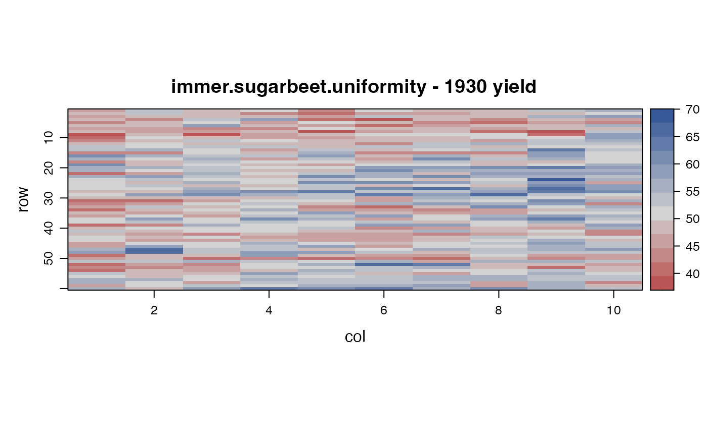
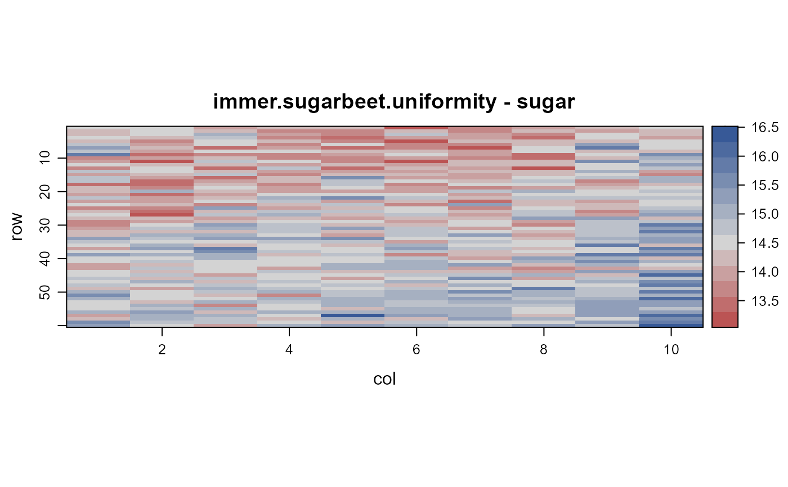
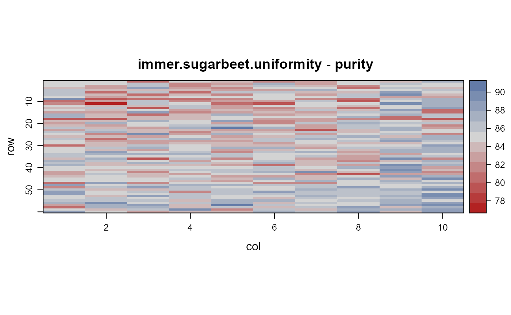
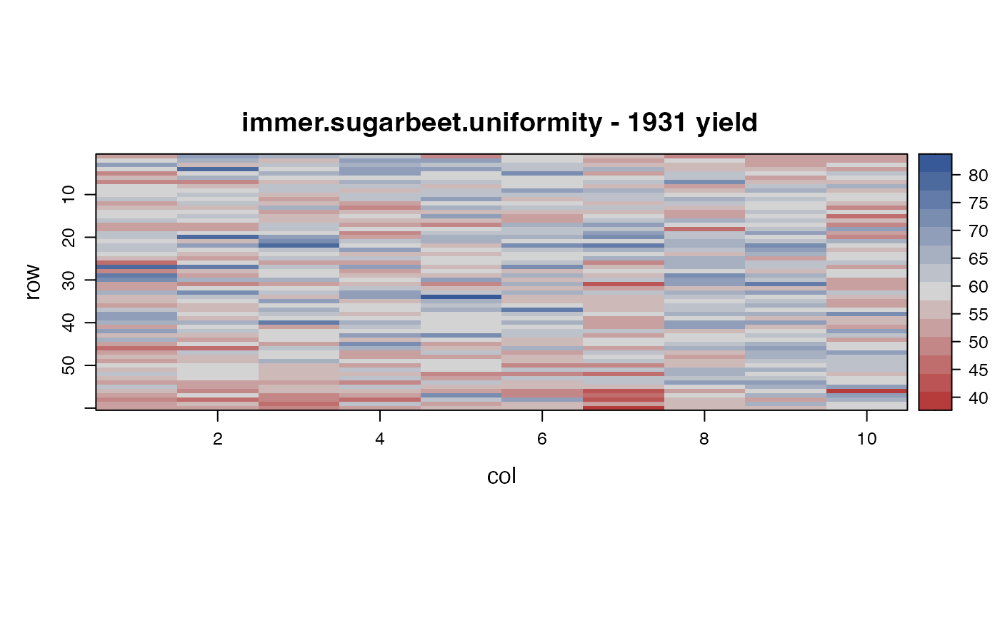

Uniformity trial of sugarbeets, measurements of yield, sugar, purity
immer.sugarbeet.uniformity.RdUniformity trial of sugarbeets, at Minnesota, 1930, with measurements of yield, sugar, purity.
Format
A data frame with 600 observations on the following 5 variables.
yearyear of experiment
rowrow
colcolumn
yieldyield, pounds per plot
sugarsugar percentage
purityapparent purity
Details
1930 Experiment
Beets were planted in rows 22 inches apart, thinned to 1 plant per row. At harvest, the rows were marked into segments 33 feet long with 2 foot alleys between ends of plots. The harvested area was 60 rows 350 feet long.
Field width: 10 plots * 33 feet + 9 alleys * 2 feet = 348 feet
Field length: 60 plots/rows * 22 in/row / 12 in/feet = 110 feet
Planted in 1930. Field conditions were uniform. Beets were planted in rows 22 inches apart. After thinning, one beet was left in each 12-inch unit. At harvest, the field was marked out in plot 33 feet long, with a 2-foot alley between plots to minimize carryover from the harvester. A sample of 10 beets was taken uniformly (approximately every third beet) and measured for sugar percentage and apparent purity. The beets were counted at weighing time and the yields were calculated on the basis of 33 beets per plot.
Immer found that aggregating the data from one row to two resulted in a dramatic reduction in the standard error (for yield).
----------
1931 Experiment
Planted 13 May 1931. Field layout was the same as the previous year. Unclear if the same land was used.
Field width: 10 plots * 33 feet + 9 alleys * 2 feet = 348 feet
Field length: 60 plots * 22 inches/row / 12 in/feet = 110 feet
The data for this experiment were not published in Immer (1933), but were deposited at Rothamsted.
This data was made available with special help from the staff at Rothamsted Research Library.
Source
Immer, F. R. (1932). Size and shape of plot in relation to field experiments with sugar beets. Journal of Agricultural Research, 44, 649-668. https://naldc.nal.usda.gov/download/IND43968078/PDF
Immer, F. R. and S. M. Raleigh (1933). Further studies of size and shape of plot in relation to field experiments with sugar beets. Journal of Agricultural Research, 47, 591-598. https://naldc.nal.usda.gov/download/IND43968370/PDF Rothamsted Research Library, Box STATS17 WG Cochran, Folder 5.
Examples
library(agridat)
data(immer.sugarbeet.uniformity)
dat <- immer.sugarbeet.uniformity
# Immer numbers rows from the top
libs(desplot)
# Similar to Immer (1932) figure 2
desplot(dat, yield~col*row, subset=year==1930,
aspect=110/348, tick=TRUE, flip=TRUE, # true aspect
main="immer.sugarbeet.uniformity - 1930 yield")

# Similar to Immer (1932) figure 3
desplot(dat, sugar~col*row, subset=year==1930,
aspect=110/348, tick=TRUE, flip=TRUE,
main="immer.sugarbeet.uniformity - 1930 sugar")

# Similar to Immer (1932) figure 4
desplot(dat, purity~col*row, subset=year==1930,
aspect=110/348, tick=TRUE, flip=TRUE,
main="immer.sugarbeet.uniformity - 1930 purity")

pairs(dat[,c('yield','sugar','purity')],
main="immer.sugarbeet.uniformity")
# Similar to Immer (1933) figure 1
desplot(dat, yield~col*row, subset=year==1931,
aspect=110/348, tick=TRUE, flip=TRUE, # true aspect
main="immer.sugarbeet.uniformity - 1931 yield")
